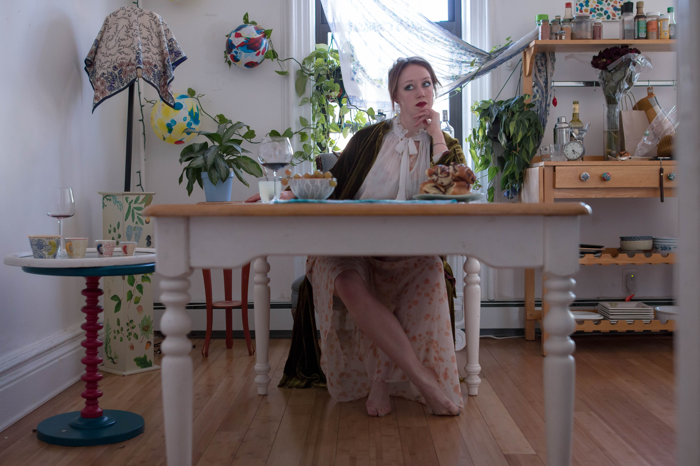
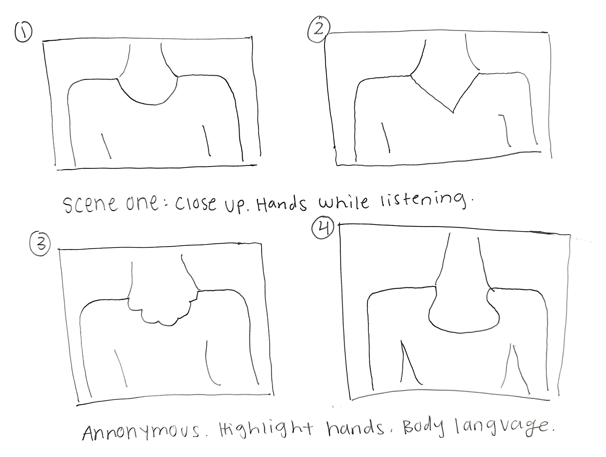
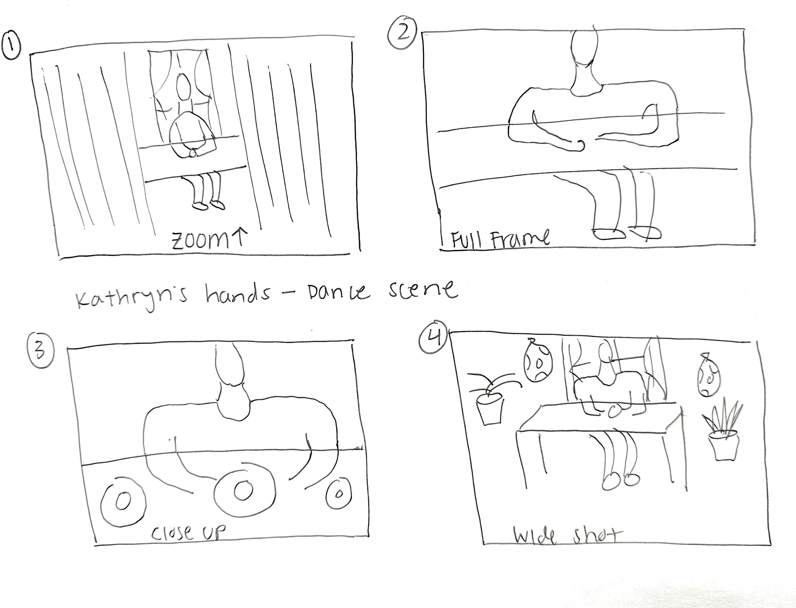
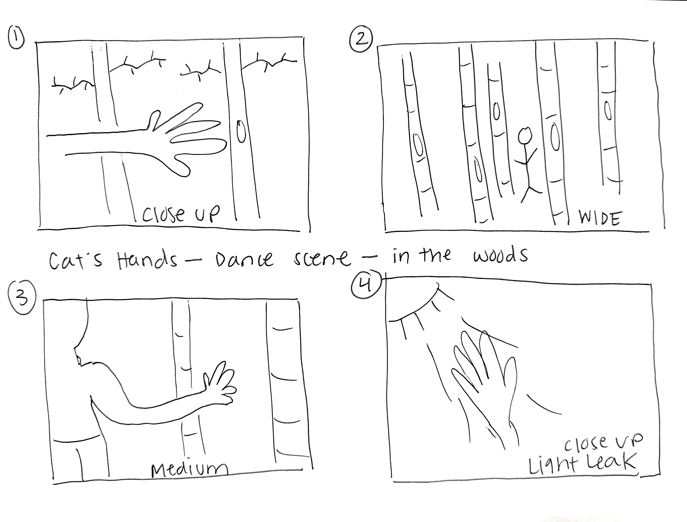

ARTISTS OF NEW YORKA series of collaborations with New York artists where I offered my videography, editing, and art direction skills to help them achieve a goal: a creative project, an audition tape, and a contest submission. |
|
|  |
INTERSTICEIn collaboration with dancer and children’s book author, Tessa Allen, Interstice is a video project that investigates the potency of what goes left unsaid. We started by interviewing friends and family with a focus on body language and the emotion evoked through hand gestures. Tessa then choreographed dance routines that evoked and mirrored our subjects’ hand gestures. We invented storylines to accompany the “alter-ego” of the untold details of those stories that are absorbed through physical signaling. |
APPROACH
|
|
|  |
TAKEAWAYSBody language plays an enormous role in how we communicate as humans and across species. There are intricate details revealed in hand gestures, vocal tone, posture, and energetic presence. |
|  |
By paying attention to these details, we open up the opportunity to better understand one another. We postulate that learning sign language should be a requirement not only for accessibility but also to invoke a movement toward embodied communication. |
|  |
MY ROLES |